User guide
Expectation Reality turns the M-VAVE FM-1 into a generative drum machine. You don't program it step by step: you press REC and it writes a groove, then you steer it. It plays on its own, and it is made to play under After Images: it follows its tempo and listens to what it plays.
The name is the idea. Expectation is the groove REC deals: a fixed loop that plays exactly the same every time. Reality is what happens when you turn EVOLVE up: up to halfway the groove bends into weirder loops that still repeat; past it, it flows freely and rewrites itself.
1Quick reference
| Control | What it does |
|---|---|
| K1 to K4 at home | the four parts' levels: KICK, SNARE, PERC, HATS |
| HOME held + K1 to K4 | MOOD, ACTIVITY, EVOLVE, DRIFT |
| HOME tapped at home | the FM-1's health: CPU, drops, saving |
| HOME elsewhere | back home |
| REC | a new groove at the end of the loop playing (a new key too; one part's sound carried over; the tempo stays as it is) |
| REC held | a new groove in the same key |
| SEL held + REC | the chosen part dealt afresh |
| OCT- / OCT+ held as you press a key, or tapped while you hold it | hold that punch-in or randomiser: to the loop's end (OCT-) or for good (OCT+) |
| OCT+ alone | let every hold go |
| HOME held + OCT- / OCT+ | back and forward through the grooves REC replaced |
| SAVE | keep the groove |
| ALGORITHM knob | step through saved grooves |
| PLAY | stop and start (from the top of the bar) |
| SEL, or SELECT knob | choose the part |
| PRESET knob | the chosen part's engine |
| EDIT | SOUND |
| SEQ | GROOVE |
| ENV | MIX |
| FX, again, again, again | SENDS, EFFECTS, TYPES, DELAY |
| LFO | MOTION |
| GLO, twice, three, four times | MACROS, PERSONALITY, VISUALS, SCALE |
| ARP, twice, three times | MIDI, CHANNELS, USB AUDIO |
| white keys | punch-in effects (section 13) |
| black keys | randomisers (section 13) |
2Installing
You need a computer with Chrome or Edge and a USB cable for the FM-1.
- Open the installer and plug the FM-1 in.
- Follow the page: it finds the FM-1, checks it, and installs.
- When it restarts, Expectation Reality plays.
To go back to the original firmware, or to After Images, install that the same way. Each firmware keeps its own settings: switching doesn't mix them up.
3The first five minutes
- Listen. It starts playing a groove. Turn K1 to K4 to set KICK, SNARE, PERC and HATS.
- Press REC. A new groove: new sounds, new patterns and colours, at the same tempo, coming in at the end of the loop playing (on its bar line, so it stays in time). One part keeps its sound from the groove before (its SOUND and MIX settings, with a new pattern), so a run of grooves flows like a set: the popup says which. Press it a few times.
- Hold HOME and turn K3 (EVOLVE). At 0 the groove loops exactly. Turn it up and the groove's hidden details come in one by one: ratchets, ghost notes, nudges, conditions. Past about 70 it starts rewriting itself.
- Hold a white key. The fifth white key from the bottom repeats the last eighth; the ninth and tenth pitch it down and up; the bottom key is a high-pass filter, the top one a low-pass.
- Hold a black key. Each hit of that part gets a new random colour while you hold it.
- SAVE a groove you like. Stop with PLAY before switching off, and wait a few seconds: it keeps your settings.
4The screen
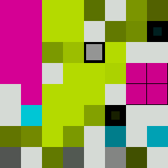
At home the whole screen is a grid of squares in four colours, one for each part. Every hit knocks a square out of the grid, somewhere at random, and it grows back in that part's colour, as fast as the sound dies away: a hat blinks, a tom leaves a hole that slowly fills. Whole squares fill their cells and meet their neighbours edge to edge, so the colours lie in solid fields. Loud kicks and snares knock out a block of four. The top of the loop shows: at the start of each loop (the kick's and snare's patterns, one or two bars) the middle of the grid clears, a 4x4 block at the default size (half the grid's width at others), and grows back; in TONES it goes black and fades back to its greys. So the hits slowly repaint the grid: a groove heavy with hats drifts towards their colour. Each REC lays the grid out afresh in a new palette, dealt from a shuffled deck of sixteen (none twice until all have come): After Images' nine, ACID and ULTRAVIOLET, and five neon ones, LASER, TOXIC, MIAMI, PLASMA and CANDY.
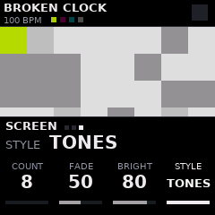
VISUALS' STYLE (GLO three times) has a second look, TONES: the squares in shades from dark grey to white (each part's grey the shade closest to its colour's own lightness, each square a little either side of it), and a hit floods its square with the part's colour, fading back to its grey. The palettes still change with each REC, so the colours come and go over the same tonal layout.
On the other pages the top shows the groove's name, its tempo and four lights (the parts, as they play), and in the top right corner a square that flashes on every beat: white, and in the kick's colour on the bar's downbeat. The punch-ins start on the next beat, so it shows you where they'll land. The bottom shows the page's four settings, After Images' way: the one you turn last shows big.
5The four parts
Expectation Reality is always a kit:
- KICK (red in the classic palette): the low end. Always dry and in the middle; it also drives the compressor.
- SNARE: the backbeat and its ghosts.
- PERC: tuned percussion, playing notes in the groove's key (or After Images').
- HATS: the top: hats, shakers, crackle, digital noise.
Each part has its own pattern on its own length. The kick and snare usually run in bars of 16 or 32 steps; the perc and hats run on odd lengths (5, 7, 9, 11, 13 steps) so they drift against the bar and meet again: polymeters.
6Steering a groove: the macros
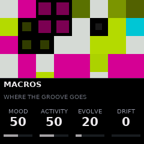
Hold HOME and turn K1 to K4 (they're also on GLO's first page):
- MOOD: how the hits are played. To the left, heavy, long, full and soft, darker; to the right, bright, short, hard and staccato. In the middle a mix: each part is dealt its own place between the two (some tight, some ringing), and every hit varies a little around it. The kick moves least: never much shorter than as dealt. The mix stays balanced across MOOD: each part is held at the same loudness against the others at every setting, and the whole kit at about the same level (After Images' balance: see section 10).
- ACTIVITY: how much of each pattern plays. At 0, stripped back: each part's core (about two kicks and two snares a bar, a perc and a couple of hats). Turned up, each part's next strongest hits come in, in order, to a full but never frantic groove at 100. The kick stays firm however high it goes (a few more hits a bar at most, never rolling).
- EVOLVE: expectation to reality, in two halves. - 0 to 50: weirder, but fixed. At 0 the groove loops exactly as dealt. Turning up brings in each step's component (see section 9) at its own point on the knob, and neighbouring sixteenths start trading places. Every one of these choices is the same each time round (a cycle of four passes of each part's pattern), so however weird it gets, it is still a loop that repeats exactly. - 50 to 100: free-flowing. Just past 50 it starts to wander, gently: some choices left to chance, a pattern rewriting a step now and then, a beat now and then played from another part of the pattern. All of it grows to 100, where nothing repeats and the patterns rewrite themselves every bar. SAVE keeps how far the rewrites have got. - KICK and SNARE keep their groove for longer: they ignore EVOLVE from 0 to 25 and again from 50 to 75, take their fixed variations from 25 to 50 and their free flow from 75 to 100. PERC and HATS evolve all the way. The kick stays the anchor throughout: EVOLVE gives it accents, ghosts and hits that come and go on a cycle, but never pushes, rolls, drops, moves or rewrites it. - For an exact loop, keep CHAOS (MOTION) at 0 too: its rolls and skips are random whatever EVOLVE says.
- DRIFT: the mixer. At 0 everything plays as set. Turned up, parts fade out for a few bars and come back (never fewer than two playing).
7Shaping a part: sound, groove, mix
Choose the part with SEL (or the SELECT knob), then:
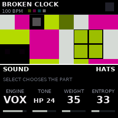
EDIT: SOUND: ENGINE · TONE · WEIGHT · ENTROPY.
- ENGINE: which drum engine (section 8). The PRESET knob changes it from any page.
- TONE: After Images' DJ filter: at 12 o'clock open; to the left a low-pass closing down; to the right a high-pass going up.
- WEIGHT: the hit's fullness: light and short to heavy, long and driven. It also spreads the attack (below): longer, lower and wider as it rises.
- ENTROPY: mostly the hit's attack, its first moments, where most of a drum's feel is. As it rises the attack changes kind, each fading into the next: a softened start (no edge at all), a click, a noise snap, a zap (a tone diving from high), a metallic ring-modulated edge, and at the top a crushed stutter. Each leaves its mark on the rest of the hit too, so a long hit keeps its character to the end: the click leaves the body ringing, the snap a rasp, the zap keeps diving, the ring and the crush stay, lighter. The attack stretches as the hit gets longer (DECAY, MOOD). ENTROPY still changes each engine's body a little, in its own way (FOLEY's and BENT's a lot: see section 8). The level stays steady as it moves.
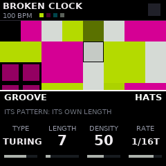
SEQ: GROOVE: TYPE · LENGTH · DENSITY · RATE.
- TYPE: what writes the pattern: MAP (a map of grooves, from half-time to 2-step, electro and broken), EUCLID (Euclidean rhythms), TURING (a Turing machine: a loop that can flip as it goes), BROKEN (IDM groupings of twos and threes).
- LENGTH: its length in steps, 3 to 32.
- DENSITY: this part busier or sparser than ACTIVITY has the rest.
- RATE: its steps, slow to fast: 1/8, 1/8T, 1/16, 1/16T, 1/32.
ENV: MIX: LEVEL · DECAY · PITCH · PAN. DECAY makes every hit longer or shorter than it was dealt; PITCH tunes the part in semitones.
8The sounds
Thirty-eight engines, nine or ten for each part, every one shaped by WEIGHT and ENTROPY (and made harder or softer, brighter or darker by MOOD). On the ENGINE knob they come grouped by part: the kicks, the snares, the perc, the hats. Any engine can be chosen for any part, and plays in that part's register: a snare's or a hat's engine on the kick drops to a kick's depth (STRING only to about 86 Hz, made duller there). REC deals from each part's own:
| Part | Engine | What it is | ENTROPY turns it |
|---|---|---|---|
| KICK | 808 | a soft, round kick: a sine, a gentle fall, a softened front | dust, a deeper fall, warmth |
| KICK | MEMBRANE | a struck skin: a falling sine and a drumhead's off-pitch modes | into a growl, the modes bent |
| KICK | BOX | a thump in a box: noise ringing two falling resonances | ringing, then rising instead of falling |
| KICK | FM KICK | two operators, the pitch falling | off the harmonics, fed back on itself |
| KICK | PING | a resonant filter struck (the analogue kick's circuit), the pitch falling | driven harder, a clanging second resonance |
| KICK | FOLD | a falling sine through a wavefolder | folded further and lopsided, the folds closing as it dies |
| KICK | TAPE | a kick on worn tape: saturated, the highs rolled off | wow, flutter, dropouts and hiss |
| KICK | THUD | a felt thump: its air and its skin | from felt to cardboard: a boxy ring, a slap |
| KICK | RUMBLE | a distorted kick and its rumble, two low tones beating | more drive, more rumble |
| SNARE | CLAP | a synthesised clap: bursts of noise a few ms apart and a tail | the bursts loosened and roughened |
| SNARE | WIRES | a body and its wires (noise through a short comb) | the wires ringing into metal |
| SNARE | GRAIN | a cluster of tiny noise bursts | scattered into a stutter, each grain its own pitch |
| SNARE | CRACK | a click ringing three resonances | the resonances pulled apart, glassy |
| SNARE | BENT | a circuit-bent toy: two oscillators wired into each other, pitch jumps, a broken sample rate | rewires it: every WEIGHT and ENTROPY setting its own wild sound |
| SNARE | RIM | a rim click: two short resonances | from wood to metal, ringing |
| SNARE | SNAP | a finger snap: a pop in a band of noise | flammed: two or three snaps |
| SNARE | BRUSH | a brush swished: noise swelling through a sweeping band | bristles catching, grittier, a faster stroke |
| SNARE | SYNTH | the drum machine's: a tuned body and a noise snap | more snap, then crushed |
| SNARE | SPRING | a snare through a spring: a burst boinging round a loop | more boing and chirp |
| PERC | MATERIAL | a struck bar, dull and short | from wood to clay to glass |
| PERC | FM PERC | FM blips with a snap of a pitch fall | inharmonic, fed back, decimated |
| PERC | STRING | a struck string | struck sharp and settling, its overtones stretched |
| PERC | FOLEY | found sounds: a box banged, a plank of wood, a footstep, something dragged | from one to the next (between two, each hit either) |
| PERC | BLOCK | a wood block: a knock in a hollow | towards a slit drum, its two tongues a fourth or fifth apart, each hit either |
| PERC | TABLA | a membrane's harmonic modes | from damped to ringing, the rim's tones |
| PERC | HAND | a hand drum, open | muted, then a slap |
| PERC | TINE | a plucked tine (a kalimba's) | a buzzing rattle and a beating twin |
| PERC | BOTTLE | a struck bottle, glass partials over its note | water in it: a bubbling wobble |
| HATS | METAL | six square waves at metal's ratios | towards the groove's own ratios, ring-modulated |
| HATS | DUST | crackle: noise in sparse grains | pitched grains, smeared like a shaker |
| HATS | DIGITAL | noise at a low sample rate and few bits | the rate jittering, the bits falling, a loop that sings |
| HATS | VOX | almost a voice: breath and a buzz through vowel formants, very short | wider pitch jumps, the vowel sliding |
| HATS | CLICK | impulse clicks through a resonance | a ping whose tone moves hit to hit, then bursts of clicks |
| HATS | SHAKER | a shaker: noise swelling, its beads rattling | more beads, grittier, wider |
| HATS | FM HAT | FM: a high carrier and an inharmonic modulator | further off, fed back |
| HATS | AIR | a breath | tightening into a whistle that wavers |
| HATS | CHIP | an 8-bit console's noise channel, its level in sixteen steps | its short loop's metallic tone, stepping down |
| HATS | FOIL | tin foil crinkled: tiny clicks through two high resonances | denser and ringing: crinkle to tinkle |
WEIGHT, for every engine, is fullness and length: bigger, lower, longer. The twenty newest take ENTROPY's whole range into their sound as well as their attack.
The perc plays low, in the octave just above the kick (C2 to B2, in the groove's key). Every engine is short and staccato as dealt; REC deals WEIGHT mostly low. MIX's DECAY and MOOD make them longer.
Every hit is also shaped by how hard it is: harder hits are a little brighter and heavier, as a real drum is.
9The grooves and their step components
REC writes each part's pattern as steps. Every step has a level (how much it belongs: ACTIVITY decides which play) and a velocity, and many carry one component, like an Elektron or OP-Z step:
- RATCHET: the hit rolled into two, three or four.
- NUDGE: the hit pushed early or late by a fraction of a step.
- CONDITION: plays only on some passes of the loop: 1:2, 2:2, 1:4, 3:4, on FILL bars (every fourth bar), or not.
- PROBABILITY: plays only sometimes.
- GHOST: a quiet extra hit on an empty step.
- OPEN / OTHER: the hats' open hat, the snare's short hit, the perc an octave up.
- PITCH: a different note or tuning.
- ACCENT: harder.
Each component has its own point on EVOLVE where it switches on: the steady ones (nudges, accents, conditions) early, chance late. So EVOLVE brings a groove's detail in gradually, and a groove at the same EVOLVE always plays the same components. Up to 50 even the chances (PROBABILITY) come out the same every time round; past 50 they're dice again.
The velocities have a shape of their own, dealt by REC: the bar's weight (the one strongest, then three, then two and four, the offbeats softest; the kick leaning on it most), an accent every three, five or seven sixteenths drifting across the bar, and a slow swell over a few bars.
Every eight bars (every four, EVOLVE well up) a fill may come on the last beat: the kick steps out, the perc and hats get busier, the snare plays a little variation, then the groove comes back. The FILL key (section 13) plays one whenever you like.
10Effects
There are three effects pages, and the keys have their own (section 13).
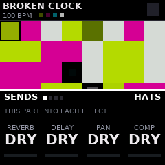
The three pages keep the same order: REVERB, DELAY, PAN, COMP.
FX: SENDS, for the chosen part: REVERB · DELAY · PAN · COMP. How much of the part goes into each effect. COMP is how much of it goes through the compressor, which always listens to the kick: whatever you send pumps under the kick (that replaces DUCK). Every part starts dry when REC deals a groove: the effects are yours to add, the kick's too.
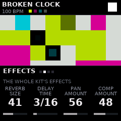
FX again: EFFECTS, the whole kit's: REVERB SIZE (how big the room is, how long it rings) · DELAY TIME (1/4 down to 1/128, where it turns into a pitched buzz) · PAN AMOUNT · COMP AMOUNT (how hard it works). How much of each part reaches the reverb and delay is set by its sends. The reverb and the delay dip lightly under each kick (a few dB, back within an eighth of a second), FREEZE's wash too, so the kick always cuts through the tails.
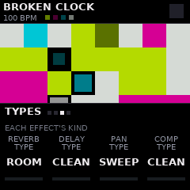
FX a third time: TYPES, each effect's kind, in the same order:
- REVERB TYPE: ROOM (a plain space), GATED (cut off in time: its pre-delay and gate follow the tempo), REVERSE (the room's sound played backwards, swelling into the hits), FREEZE (an endless wash).
- DELAY TYPE: CLEAN or GRANULAR (dirty: grains of the echo, some an octave up or down).
- PAN TYPE: SWEEP (the parts drifting across over two bars), SPIN (round you every eighth), SCATTER (each hit thrown somewhere new).
- COMP TYPE: CLEAN (glue) or TAPE SMASH (squashed into tape, pumping off the kick; extreme turned right up).
FX a fourth time: DELAY: FEEDBACK, GLITCH (how often the time jumps to another, every sixteenth: Autechre's stutter).
FX a fifth time: PUNCH-INS, the white keys' effects tuned (kept with your settings: REC leaves them):
- TAPE MASH: how chewed TAPE MASH's tape is: 0 a gentle wow, 50 as it was, 100 mangled (deep wobble, heavy saturation, darker, more dropouts). Pressing the key harder still adds more.
- CRUSH BITS: 1 to 12; fewer is grittier (6 as it was).
- CRUSH RATE: how often CRUSH takes a new sample, 1 to 22 kHz; lower is lower-fi (6 kHz as it was).
- REVERSE: ALL (the whole kit, as it was), or KICK, SNARE, PERC or HATS: that part alone played backwards, its sends with it, the rest going on forwards.
The balance (always on, as After Images has it): each part is held at the same loudness against the others at every MOOD (measured in the simulator, weighted as the ear hears it), the mix's tone tilts slowly towards a steady top-to-bottom, and a leveller keeps every groove at about the same loudness. At the very end a limiter holds the output under -1 dBFS, so the speaker, the line out and a recorder are never driven past full scale. The volume knob at full, or USB AUDIO's GAIN at 100, is unity.
11Motion
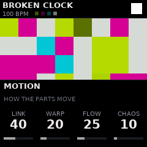
LFO: MOTION: LINK · WARP · FLOW · CHAOS, After Images' names:
- LINK: how much the parts, and After Images, answer each other: the hats keep out of the kick's way, the kick leans into After Images' bass notes, the perc answers its melody.
- WARP: the humaniser: every hit's timing loosened and its velocity varied, with a player's lean (the snare a touch late, the hats a touch early).
- FLOW: each part's sound slowly wandering.
- CHAOS: rolls, skipped hits and hits pushed off the grid, at random (never the kick's).
12Personality, key, swing and tempo
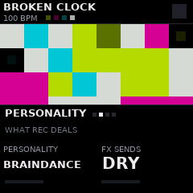
GLO twice: PERSONALITY: what REC deals: BRAINDANCE, FLOORS, CLOUDS or IMPLODE. BRAINDANCE (IDM) is the groove as it has always been: broken, shuffled, machine-like. FLOORS (techno) deals:
- the kick four on the floor, every beat, always: ACTIVITY only adds a pounding extra on top (a pickup into the one, a rolling double), and nothing (EVOLVE, CHAOS, conditions) takes a floor kick away; FILL still drops it for a bar, as a breakdown;
- the snare (mostly a clap) on two and four, with ghosts that ACTIVITY brings in;
- the perc as Euclidean rhythms on odd loop lengths (5, 7, 9, 11, 13 steps) against the bar, and the hats off-beat with a looping sixteenth machine round them, often on a length that isn't 16: polymeters, hypnotic;
- the punchier kicks, the clap, the metallic and digital hats; and next to no swing.
CLOUDS (ambient) deals soft and sparse, out of micro-sounds: a soft, long kick about once a bar (sometimes off the one), the snare a rare texture of wires and grains rather than a backbeat, and the perc and hats tiny clicks, dust, grains and foley, often in 1/32s or triplets on odd loop lengths. Soft attacks, darker tones, gentler hits, a little swing.
IMPLODE (lo-fi hip hop) deals boom-bap: a written hip-hop kick (the one, then a second hit that moves from groove to groove, with extras that ACTIVITY brings in), a crack or rim on two and four with quiet ghosts, dusty hats (quarters at ACTIVITY 0, eighths as it rises, sixteenth pickups near the top, an open hat into the bar now and then) and a sparse rim or shaker for the perc. The hats and snare filtered dark, the kick boomy, and a heavy, lazy swing.
FX SENDS (the third knob): DRY, every part dealt dry, the reverb, delay, pan and compressor yours to add (and the analogue out as clean as the kit); or DEALT, REC deals each personality's own sends for the snare, perc and hats (BRAINDANCE varied, FLOORS dub delay and a pumping compressor, CLOUDS rooms and trails, IMPLODE a small room and tape glue), all under 50. The kick is never sent to the reverb, delay or pan; DEALT gives it some compressor (most in FLOORS and IMPLODE). Starts on DRY.
The tempo while it plays is yours. Playing, choosing a personality, REC, a saved groove and history all keep the tempo as it is, so a set holds together. Stopped, choosing a personality sets its own tempo (BRAINDANCE 140, FLOORS 130, CLOUDS 65, IMPLODE 85 BPM), REC deals at the personality's tempo, and a saved groove comes back at its own. A saved groove keeps its personality. MOOD, EVOLVE, DRIFT, MOTION and every punch-in work just the same in each.
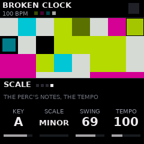
GLO four times: SCALE: KEY · SCALE · SWING · TEMPO. KEY and SCALE are the perc's notes. SWING delays the off sixteenths (REC deals it: mostly straight). TEMPO is yours: 100 BPM at every power-on, and REC never changes it, so it holds while you play live. A saved groove keeps its own tempo: recalled while stopped it comes back at that tempo, and REC goes on from there (going back through history likewise); recalled while playing, it takes the tempo playing. Shown as IN while it follows a clock.
13The keys: punch-ins and randomisers
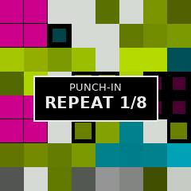
The white keys are punch-in effects on the whole sound, while you hold them. From the bottom:
| Key | Punch-in |
|---|---|
| 1 (bottom) | HIGH-PASS, from about 350 Hz; press harder for more |
| 2 | KILL KICK |
| 3 | FILL: from the next beat, for a bar (held, for as long as you hold it): a contrast, the kick on the downbeat alone, the perc and hats busier (ACTIVITY low) or back to their core hits (ACTIVITY high) |
| 4 | GLITCH: everything as it plays, chopped: each sixteenth let through, repeated (a 16th, 32nd, 64th or triplet) or played backwards |
| 5 | REPEAT 1/8 |
| 6 | REPEAT 1/12 (triplets) |
| 7 | REPEAT 1/16 |
| 8 | REPEAT 1/32 |
| 9 | PITCH DOWN an octave |
| 10 | PITCH UP an octave |
| 11 | TAPE MASH: a chewed tape, held: wobbling, catching, saturated and dull, with dropouts; press harder for more (how chewed: TAPE MASH on FX's PUNCH-INS page) |
| 12 | REVERSE: everything as it plays, backwards: each eighth (a sixteenth at slower tempos) played backwards as the next comes in (or one part only: REVERSE on FX's PUNCH-INS page) |
| 13 | FREEZE: a moment of the whole kit caught in the room and held as an endless wash, the groove going on over it; held, caught anew each bar |
| 14 | SWELL: the latest strong hit played backwards, swelling into the next beat; held, into every beat |
| 15 | CRUSH (how hard: CRUSH BITS and CRUSH RATE on FX's PUNCH-INS page) |
| 16 (top) | LOW-PASS, from about 1.5 kHz, a gentle slope; strike it harder for more |
FILL plays alongside the other white keys. A fill is a contrast, a simple change of the groove, not a roll: the kick steps out (only the bar's downbeat, if the fill reaches one) and the snare plays a slight variation of its own. With ACTIVITY low, the perc and hats get busier: their whole patterns, ghosts included, and where a pattern is sparse some sixteenths of their own (a light run on the hats, a 3-3-2 on the perc), never rolled or speeding up; with ACTIVITY high, they drop back to their core hits, a breakdown; in between, each fill goes one way or the other at random. Then the groove comes back as it was. Each fill is a different variation.
None of them goes silent if you press between the hits. The repeats loop one piece of sound and hold it: if the slice you pressed on has no hit in it, they take the nearest one before it on the same grid that has, or listen on to the next slice with a hit (so they stay in time). GLITCH and REVERSE work like CRUSH: on everything as it plays, the beat going on through them, so MOOD and everything else still change what you hear. FREEZE catches the whole kit's last half beat, kick included, or, if that was between hits, listens on until it catches one; it holds through any REVERB TYPE, GATED included. SWELL finds the latest strong hit and plays it backwards, landing on the beat. Held (or held with OCT- or OCT+), FREEZE catches a new moment at each bar and SWELL swells into every beat.
On the beat. While it plays, a punch-in waits for the next beat to start (pressed up to a sixteenth late, it starts at once), so a loose press still lands in time, and ends the moment you let go (FREEZE's wash gone within about a quarter of a second). A quick tap let go before its beat still plays, a sixteenth's worth. SWELL keeps its own timing (it lands on the beat), the two filters work the instant you press, and stopped, everything is instant.
The repeats are held to the grid: however late you press, the loop starts on a line of its own grid (an eighth, a sixteenth...) and repeats in time with the groove. GLITCH and REVERSE keep to the grid from the beat they start on.
Holds. Hold OCT- as you press a key, or hold the key and tap OCT-, and it stays on to the end of the loop (the kick's pattern, at least a beat away); OCT+ the same way and it stays on for good. Either order works, for the white keys and the black. A held key stays lit. Press it again to let it go, or press OCT+ on its own to let every hold go.
One white key at a time. Only the newest white key plays: a punch-in or one of the filters (pitch up and down would cancel, two loops would fight, and stacked effects can overload the FM-1's processor); FILL, which only changes the pattern, plays alongside. Press a second white key while holding the first and the second takes over; let it go and the first comes back, if you're still holding it (or it's held with OCT- or OCT+). Holding a new white key with OCT- or OCT+ lets go of the one held before. The black keys play together, alongside it: hold or latch as many as you like (the snare's, perc's and hats' all latched, say, with the kick left as it is). Everything fades in and out over a few milliseconds, so nothing clicks.
The black keys are randomisers. While you hold one, every hit of its part takes a new random value of one of its SOUND settings, and holds it until the next hit (sample and hold). Press harder for wilder values. By the black keys' groups, low to high:
| Keys | Randomise |
|---|---|
| the first three | KICK's TONE, WEIGHT, ENTROPY |
| the next two | SNARE's WEIGHT, ENTROPY |
| the next three | PERC's TONE, WEIGHT, ENTROPY |
| the next two | HATS' WEIGHT, ENTROPY |
| the last one | every part's TONE, WEIGHT and ENTROPY |
14Saving your grooves
SAVE keeps the groove playing (up to 16); ALGORITHM steps through them. While it plays, the groove you step to comes in at the end of the loop playing, on its bar line (the list says NEXT LOOP); stopped, at once. REC and going back through history (HOME held + OCT- / OCT+) wait for the loop's end the same way. If you've changed a saved groove, its name shows a star (not for the tempo: recalled while playing, a groove takes the tempo playing). EVOLVE's rewrites are part of a groove, so SAVE keeps them too.
Your settings and the groove playing are kept by themselves once you stop with PLAY: after a few seconds of silence (writing to the FM-1's memory interrupts the sound, so it never does it while playing). Updates keep everything you've saved.
15Playing with After Images
Expectation Reality listens to After Images' notes: After Images sends each layer on its own channel (GROUND 1, BODY 2, LIGHT 3, DUST 4), and Expectation Reality hears them (ARP: MIDI, LISTEN on; CHANNELS, LISTEN CH 1-4).
- the busier After Images is, the busier the drums (with LINK up)
- the kick leans into GROUND's bass notes
- the perc plays in the key GROUND is in (ARP again: CHANNELS, FOLLOW on), and now and then answers LIGHT's melody
Connecting them. The FM-1 sends MIDI over USB only, so two FM-1s need something in between to talk:
- a computer, an iPad (AUM) or another USB host: route After Images' MIDI (clock and notes) to Expectation Reality. On After Images set CLOCK OUT and NOTES OUT; on Expectation Reality CLOCK IN and LISTEN on.
- an Ableton Move or other clock: both FM-1s can follow its clock (CLOCK IN on both); then they play in time, though Expectation Reality won't hear After Images' notes.
A direct link through a powered USB hub (this FM-1 as the host) is planned; it needs testing on hardware first.
16MIDI, sync and recording
ARP: MIDI: CLOCK · NOTES OUT · LISTEN · CC IN.
- CLOCK: INT (its own tempo), IN (following another device's clock, locked to its beats and bars; its Start and Stop obeyed), OUT (leading: sending its clock, Start and Stop).
- NOTES OUT: every hit sent as a MIDI note on OUT CH (channel 10 by default): kick 36, snare 38, perc its own note, closed hat 42, open hat 46.
- LISTEN: After Images' notes heard.
- CC IN: CC 20-23 move the macros, 24-27 the effects (REVERB SIZE, DELAY TIME, PAN AMOUNT, COMP AMOUNT), 28-31 MOTION.
ARP again: CHANNELS: LISTEN CH (the four channels After Images' layers come on), OUT CH, FOLLOW (the perc's key from After Images' GROUND).
ARP a third time: USB AUDIO: OUTPUT · CONTROL · GAIN, as After Images has it. Plugged into a computer the FM-1 is a stereo audio input.
- OUTPUT: MIX, the kit as you hear it; or CLEAN, the kit without FX's effects (no REVERB, DELAY, PAN or COMP), to record dry and add your own. CLEAN goes to the speaker too, so you hear what's recorded; the switch glides, so it never clicks. The punch-ins still play.
- CONTROL: MASTER (the recording follows the volume knob) or FIXED (at GAIN, whatever the volume knob says).
- GAIN: the level with CONTROL at FIXED; 100 is unity, never past -1 dBFS.
17When something's not right
- No sound: is it stopped (STOPPED on the screen)? Press PLAY. Are the levels at home turned up?
- Following a clock and nothing plays: with CLOCK IN it waits for the leader's Start. Press play on the leader, or set CLOCK to INT.
- The perc sounds out of key with After Images: set the same KEY and SCALE (GLO four times), or turn FOLLOW on.
- It seems busy or tired, or crackles: tap HOME at home: it shows the processor's load, any audio drops (each drop is a crackle) and 2 CORES or 1 CORE. It needs both of the FM-1's cores: if the second one ever stumbles it is stood down rather than let crash the FM-1, and stays off until you power off, so 1 CORE means drops on a busy groove. Beside it, why: MISREAD (it read its memory wrong, a quirk some FM-1s have, more often under load), LATE (it fell behind), FAULT, NO START or BARRED (stood down earlier, until power-off). Power off and on again for both cores. Drops climbing? Tell me what it shows, the groove and the settings.
- At power-on: it stays silent until it has read the volume knob, then fades in, so with the volume down nothing comes through.
Expectation Reality is free and open source (MPL-2.0), by TheGrizard, built on fm1-base by Charles Vestal.